MGT1114 Business Plan 2 | Tambiz
Everything needed to run Tambiz, from the workbook you prepare to the results email each student receives, and to look after the app from one year to the next. Written for someone who has never opened it.
FEU Manila · Tambiz judging, results and grades · tambiz-calculator-lyart.vercel.app
Tambiz is the awarding night of MGT1114 Business Plan 2. Groups defend their business plan and run a booth, a panel of judges scores them, and every student's grade comes out of those scores. The Tambiz app does the scoring, the ranking and the grading. It asks for one workbook in and hands you two files out.
This edition replaces every earlier one. The app was cut back in September 2026 to seven coordinator tabs and two judge screens. The class roll, the adviser list, the groups and members pages, the students' and advisers' private links, the release screen and group codes are all gone. If you have an earlier printed copy, recycle it: its pictures show screens that no longer exist.
| Ch. | Chapter | What it covers |
|---|---|---|
| 1 | How Tambiz thinks | Events, groups, judges, the two halves, what "submitted" and "closed" mean |
| 2 | Preparing the workbook | Your own file from the template, built a few rows at a time, and checked before it goes in |
| 3 | Setting up | Signing in, the event, the scoring sheet wording, the upload, the judges' slips, opening judging |
| 4 | How a score becomes a grade | One student worked through from judges' scores to the FEU letter band |
| 5 | The judge's side | Every tap a judge makes, on a phone |
| 6 | Your evening | Progress, correcting a score, what stops the event closing, closing it |
| 7 | Results, grades and profiles | The Results tab, individual grades, judge profiles and the workbook |
| 8 | The two files and the emails | The workbook, the email file, and sending with Power Automate |
| 9 | Running and looking after it | What it is made of, the accounts, changes, passwords, the yearly cycle, the month-before checklist, troubleshooting, records, handing over |
| 10 | What is not built yet | An honest list |
"At a glance", one page to keep beside you on the night, closes the manual.
Wherever there is something to do, it is a numbered step with one action, like the worksheets you already know. Do them in order. Three kinds of box appear beside the steps:
Judge confirmed 16, typed 0
Type it character for character.
What you see when a step fails, and how to fix it.
A rule that decides grades or awards.
Words in bold are the words on the screen or in the file.
Every picture of the app was taken on 18 and 19 September 2026 from the app as it now stands, running on a laptop with its own empty database, so that nothing was typed into the live app. The pictures follow one invented year, Tambiz 2028, from the empty Data tab to the email file: six groups, eighteen students, four judges. Every student, adviser, judge, email address and business name in them is invented. The criterion wording is an example, not the department's.
The Tambiz Manual | Chapter 1
Seven ideas. Once they are clear, every screen makes sense.
Each year's Tambiz is one event, for example Tambiz 2028. Its students, groups, advisers, judges and scores all belong to it and to nothing else, so last year can never leak into this year's grades. Past events stay in the list, readable, for as long as the app exists. The app also comes with a practice event, full of invented people, for trying things out.
A group is a business, known only by its name, for example KAPE KULTURA. There are no group numbers. Each student belongs to one group. Each group has one adviser; an adviser may have several groups. All three come from the same rows of your workbook: the groups are the different names in its Group column, the advisers the names in its Adviser column.
Group names are compared ignoring capitals, spaces and punctuation, so Kape Kultura and KAPE KULTURA are the same group.
A judge signs in with their own email and password, on their own phone. The app makes the password and shows it to you once, on a sign-in slip to print. Because every judge signs in as themselves, the app knows who gave every score, which is what makes corrections and judge profiles possible. A judge's account is kept from year to year.
Every group is judged twice: in the Defense and at the Booth. Each half has its own categories, and each category a list of criteria with a maximum for each.
| Half | Weight | Categories (criteria · points) |
|---|---|---|
| Defense | 70% | Elevator Pitch (5 · 100) · Infomercial (4 · 40) · Paper (9 · 100) · Product Demo (3 · 100). Defense judges also score every student: Presentation /20, Communication /40, Q&A /40. |
| Booth | 30% | Best Business Plan Booth (8 · 100) · Student Innovation (4 · 100) · Best Product Demonstration (6 · 100) |
39 criteria in all: 21 in the Defense, 18 at the Booth. The points, the 70/30 weights and the letter bands are fixed; only the wording of each criterion can be changed on screen (chapter 3).
One judge's scores for one group in one half is a sheet. A judge fills it in and then taps Mark group complete. That sheet is now submitted.
Only submitted sheets count. A sheet a judge started and never marked complete counts for nothing: not in any percentage, rank, grade, file or judge profile. The Progress tab shows these as in progress · not counted so you can chase them.
A criterion nobody scored is left out, not counted as zero. A group that is not fully scored reads Incomplete and gets no rank, so a half-judged group never looks like a weak one. The single exception is a student marked absent from the defense: their own individual scores count as zero (chapter 4).
When judging is over you close the event. Judges can no longer change a score, and the two files are ready. You can still undo closing, and you can still correct a score with a reason, until you download the email file. From that moment nothing about the event can change, because the emails would no longer match.
| The event says | What it means |
|---|---|
| Open for judging | Judges on the event can score. You can change anything. |
| Closed | Judges cannot change scores. You can correct a score with a reason, download the workbook, or undo closing. |
| Closed, email file downloaded | Final. Nothing can change. You can download both files again. |
The Tambiz Manual | Chapter 2
Everything about the students, groups, advisers and judges comes from one Excel workbook that your staff build. Get it right here and the rest of the evening is easy.
Your staff build their own file, starting from the app's template. Do not upload the registrar's export. The export has the wrong columns and knows nothing about groups or advisers. If it is useful, copy names and numbers out of it into the template, one column at a time, but the file you upload is always your own.
| Sheet | One row per | Columns |
|---|---|---|
| Students | student | Student No., Surname, First Name, Middle Name, Section, Email, Group, Adviser, Adviser Email |
| Judges | judge | Name, Email, Password |
There is no Groups sheet and no Advisers sheet. The groups are the different names in the Group column; the advisers are the names in the Adviser column.
The Data tab of any event has the button (chapter 3 shows how to get there). The file saves as Tambiz workbook template.xlsx.
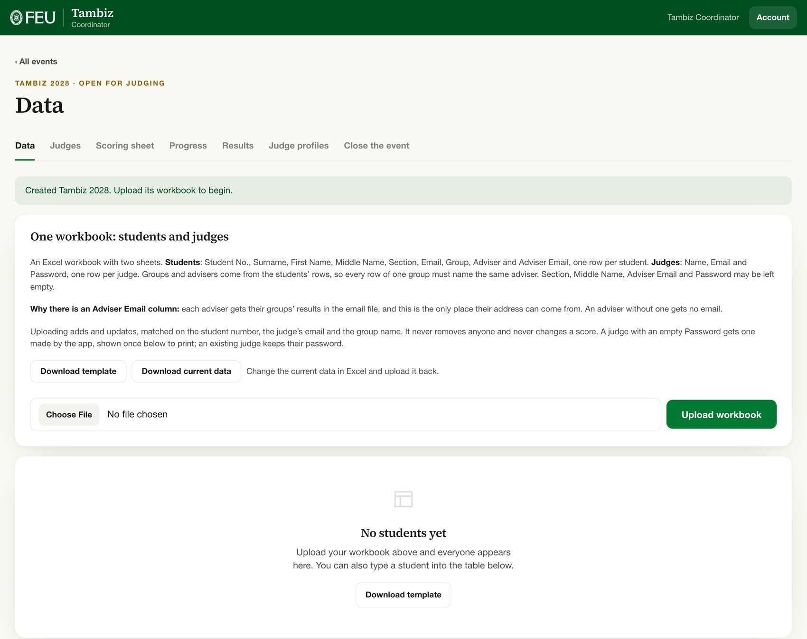
The Data tab of a new event. Download template is in the upper card and again in the empty table's card.
Students and Judges each have their headings and one invented example row. How to fill this in repeats this chapter's rules in the app's own words.
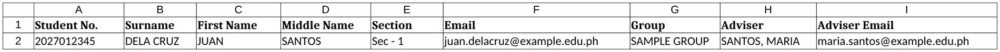
Students, as downloaded. Row 2 is an invented example.
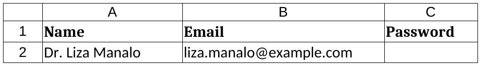
Judges, as downloaded.
Choose File → Save As, keep Excel Workbook (.xlsx), and name it for the year.
Tambiz 2028 workbook
| Column | Needed? | What goes in it, and what the app does with it |
|---|---|---|
| Student No. | Yes | As on the class roll. It is how the app recognises a student when you upload again. |
| Surname, First Name | Yes | As on the class roll. The official grade sheet shows them as SURNAME, FIRST NAME. |
| Middle Name | No | Shown after the first name on the grade sheet. |
| Section | No | For example Sec - 1. Judging never needs it, but the For Encoding grade sheet is sorted by it. |
| Yes | The student's own address. Their results email goes here. | |
| Group | Yes | The business name, for example KAPE KULTURA. Judges see it on their phones. |
| Adviser | Yes | The group's adviser, written as the registrar writes it: SANTOS, MARIA LOURDES. Every row of one group must name the same adviser. |
| Adviser Email | No | Where the adviser's results email goes. It is the only place the app can learn it. An adviser without one gets no email. |
Work group by group. After each step, look at your sheet and compare it with the picture.
On the Students sheet, right-click the row number 2 and choose Delete. Do the same on the Judges sheet. Keep row 1, the headings, exactly as it is.
Forgot? The upload adds an extra student, DELA CRUZ, JUAN, in a group called SAMPLE GROUP. Remove him on the Data tab: select his row and press Remove student. The group disappears by itself once it has nobody in it.
One row per student. The three rows of KAPE KULTURA name the same adviser and the same adviser email.
2025010001 REYES ANDREA CRUZ Sec - 1 andrea.reyes@example.edu.ph KAPE KULTURA SANTOS, MARIA LOURDES mlsantos@example.edu.ph
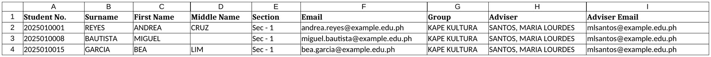
After step 5. Miguel Bautista has no middle name: that cell is simply left empty.
BANIG & CO. has the same adviser as KAPE KULTURA, which is fine: an adviser may have several groups. SARI-SARI SMART has a different one.
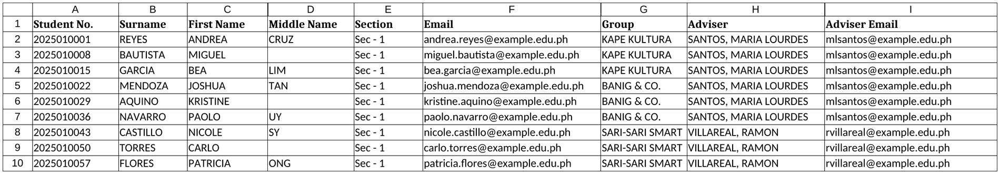
After step 6: three groups, nine students, two advisers.
Here, three more groups in Sec - 2. OCAMPO, DANILO's email is not known yet, so his Adviser Email cells are left empty for now.
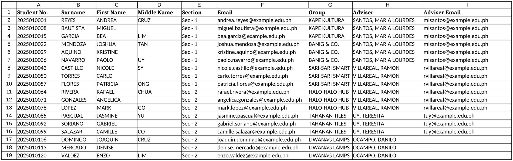
After step 7: six groups, eighteen students, four advisers. Chapter 6 adds Mr Ocampo's email in the app.
Student numbers that start with 0. Excel drops a leading zero from a number. If your numbers can start with 0, select column A and choose Format Cells → Text before typing any. Numbers starting 20… are not affected.
Name as the judges will see it, and the email they will sign in with. Leave Password empty: the app makes a password for each new judge and shows it once, on a slip to print (chapter 3).
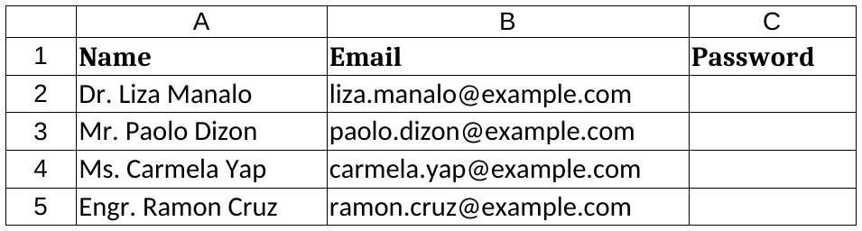
Four judges, passwords left empty.
Press Ctrl+S (⌘S on a Mac). If Excel asks about the format, keep Excel Workbook (.xlsx). A .xls or .csv file is refused.
Five formulas, typed once to the right of the data, catch the mistakes that matter. The app ignores any column it does not know, so they can stay in the file when you upload it.
BLANK TWICE CHECK EMAIL ADVISER DIFFERS CHECK SECTION
Type Sections in Q1, then each section exactly as it should be written, one per cell from Q2: Sec - 1, Sec - 2, and so on.
=IF(OR(A2="",B2="",C2="",F2="",G2="",H2=""),"BLANK","")
=IF(COUNTIF($A$2:$A$500,A2)>1,"TWICE","")
=IF(ISNUMBER(SEARCH("@",F2)),"","CHECK EMAIL")=IF(COUNTIFS($G$2:$G$500,G2,$H$2:$H$500,H2)<COUNTIF($G$2:$G$500,G2),"ADVISER DIFFERS","")
=IF(COUNTIF($Q$2:$Q$20,E2)=0,"CHECK SECTION","")
Select K2 to O2, then double-click the small square at the bottom right of the selection. Any flag that appears marks a row to fix.
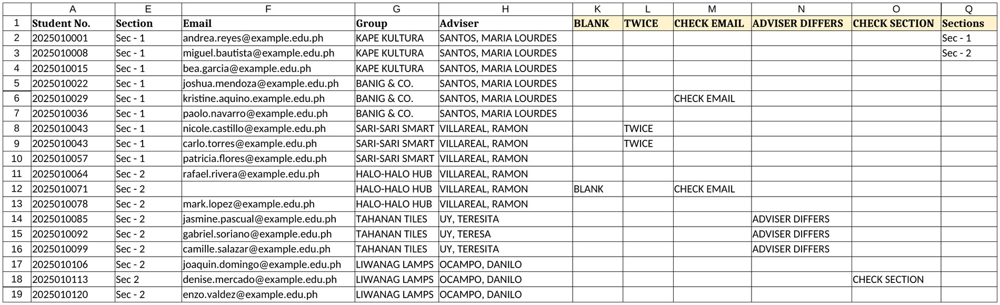
A practice copy with five mistakes planted: an email with no @ (row 6), one number typed twice (rows 8 and 9), an empty email (row 12), "UY, TERESA" for "UY, TERESITA" (rows 14–16), and "Sec 2" for "Sec - 2" (row 18). Columns B–D and I are hidden in these two pictures so the rest can be read.
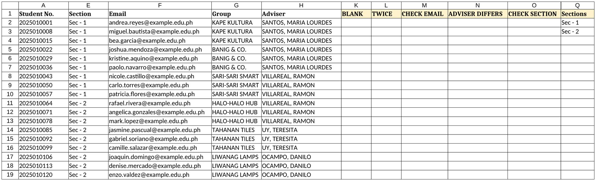
The real file after fixing: every check column is empty.
| Flag | What the upload does |
|---|---|
| BLANK | Skips the row and says so, for example "Students row 12 has no Email, so it was skipped." |
| TWICE | Keeps only the later of the two rows, and says so. The student on the earlier row is left out until you fix the number and upload again. |
| CHECK EMAIL | Skips the row: "Students row 6: “kristine.aquino.example.edu.ph” is not an email address, so the row was skipped." |
| ADVISER DIFFERS | Refuses the whole group and names the rows (chapter 3, step 10). Everybody else is uploaded. |
| CHECK SECTION | Nothing: it uploads silently. The student is sorted under the misspelt section on the grade sheet. |
A wrong email and a wrong section upload silently. The app checks only that an email looks like one (something@something.something). andrea.reyez@example.edu.ph looks fine, uploads fine, and sends Andrea's grade to nobody, or to somebody else. A section written Sec 2 instead of Sec - 2 becomes a section of its own. Formulas cannot catch a real-looking wrong address: have a second person read the Email column against the class roll before you upload, and fix any mistake later directly in the Data table (chapter 3).
The Tambiz Manual | Chapter 3
From signing in to judges holding their slips. About an hour, most of it checking.
tambiz-calculator-lyart.vercel.app
The sign-in card, the same for you and for the judges.
The first page of the day can take a few seconds while the database wakes up. Wait; do not press again. Chapter 9.7 covers a site that does not load at all.
The coordinator login is admin@tambiz.demo. The password is kept where chapter 9.2 says.
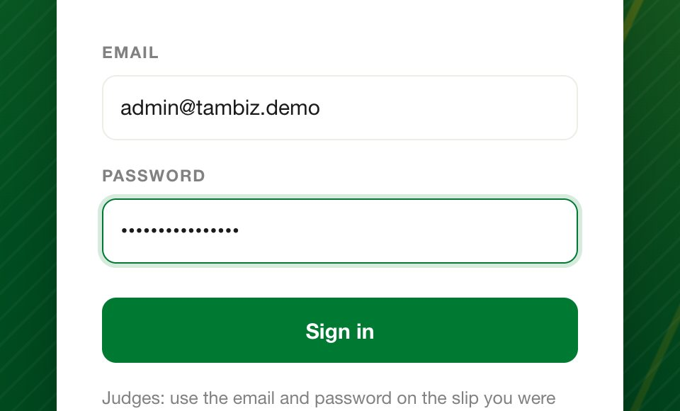
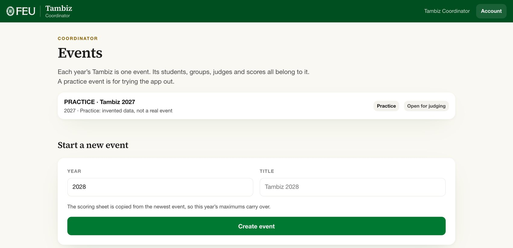
You land on Events. A fresh app has only the practice event.
Sign-in failed. Check your email and password. Check for a capital letter or a space the keyboard added. After three wrong tries the app makes you wait, 10 seconds and doubling up to 5 minutes, and says Too many attempts. Wait … seconds, then try again. A forgotten coordinator password: chapter 9.4.
Press Account at the top right. Type the current password, then the new one twice, at least 12 characters, and press Change password.
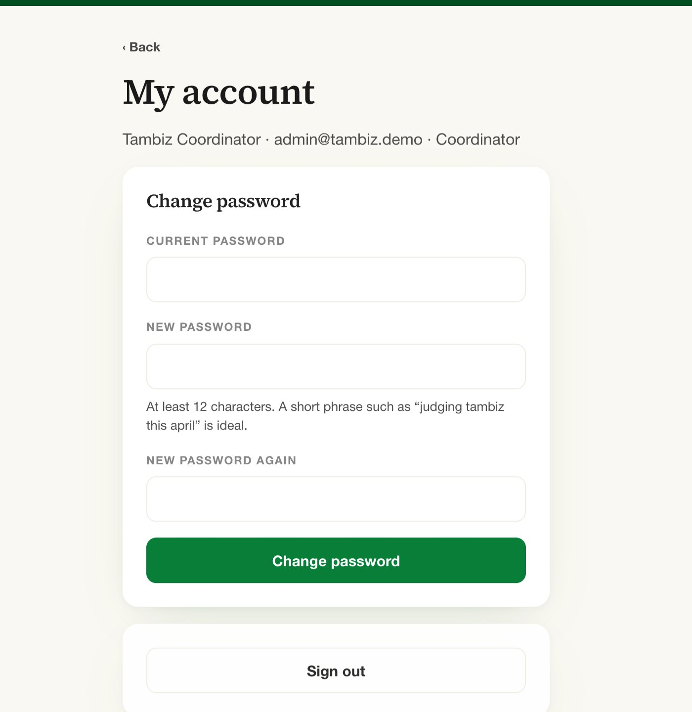
If your new password stops working after a day and the old one works again, the site is putting a password back every time it starts. That is the SEED_ADMIN_PASSWORD setting in chapter 9.4.
The year box already shows next year. Leave Title empty and the event is called "Tambiz" and the year.
You land on the new event's Data tab, with the green message Created Tambiz 2028. Upload its workbook to begin. (pictured in chapter 2, step 1). The seven tabs along the top are the whole app: Data, Judges, Scoring sheet, Progress, Results, Judge profiles, Close the event.
The new event copies its scoring sheet, points and criterion wording from the newest existing event.
Made it with the wrong year? There is no delete button. Leave it empty and create the right one; an event with nobody in it does no harm. Never put this year's students into last year's event.
Every screen of the practice event carries a shaded Practice event bar. Everything in it is invented, and it is where you rehearse (chapter 9.6). Never score a real group in it.
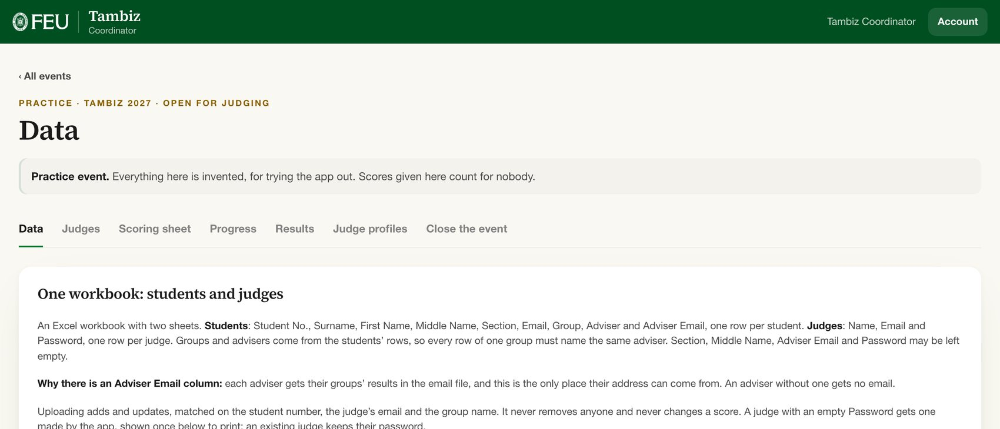
"Practice event. Everything here is invented, for trying the app out. Scores given here count for nobody."
Judges see each criterion's wording on their phones. Without it the rows read "Criterion 1, Criterion 2…". Wording never changes a score, so this can be done at any time, even during judging.
Each category is a card with one box per criterion; the points for each criterion are printed beside its box, for example /20.
In sheet order: the 21 Defense criteria, then the 18 Booth criteria. Click the first box under Elevator Pitch and press Ctrl+V. Each line fills the next box, carrying on into the next category; numbers and bullets at the start of a line are removed.
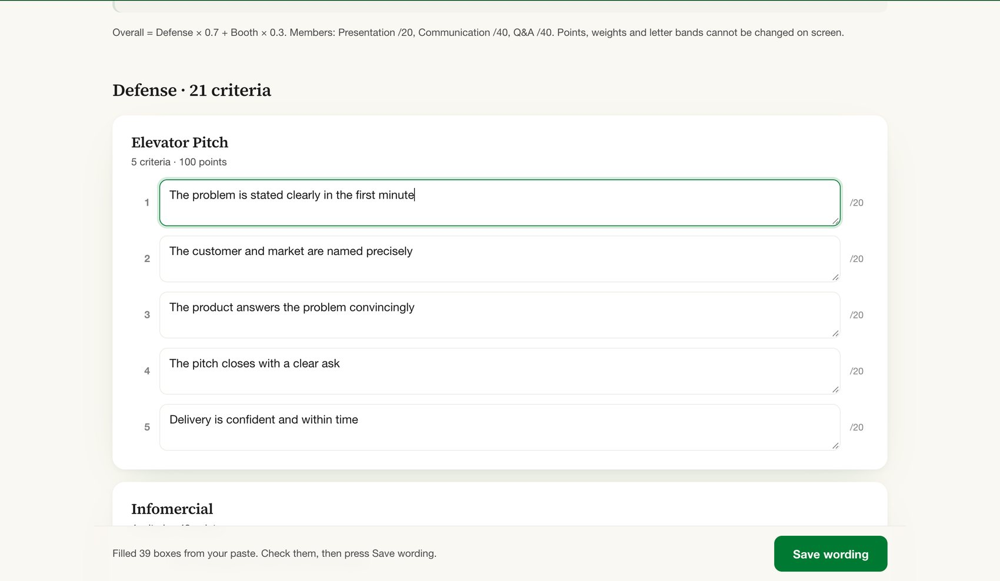
After pasting. The bar at the bottom says Filled 39 boxes from your paste. Check them, then press Save wording.
A line too many or too few pushes everything after it one box along. The last box of each category shows it at once.
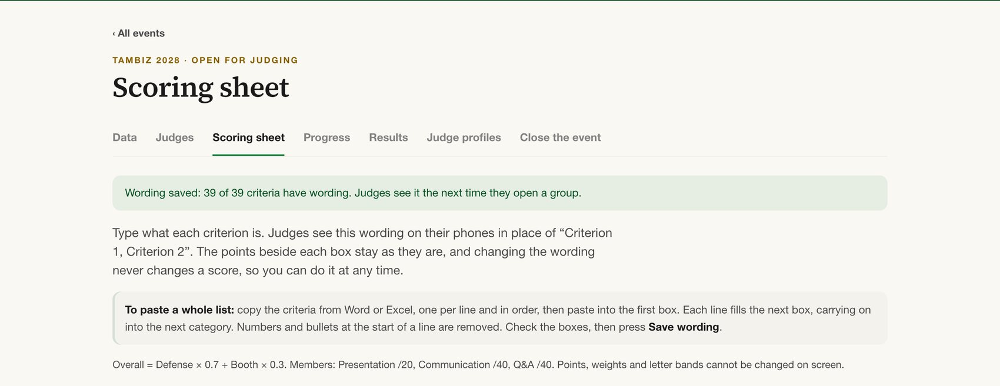
Wording saved: 39 of 39 criteria have wording. Judges see it the next time they open a group.
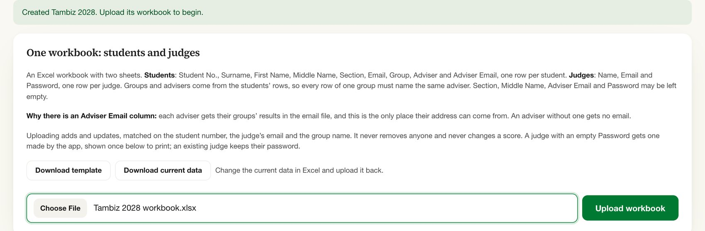
The file's name appears beside Choose File.
A bar counts the rows of the file as they are checked, then says it is saving them all together. Nothing is saved until every row has been checked.
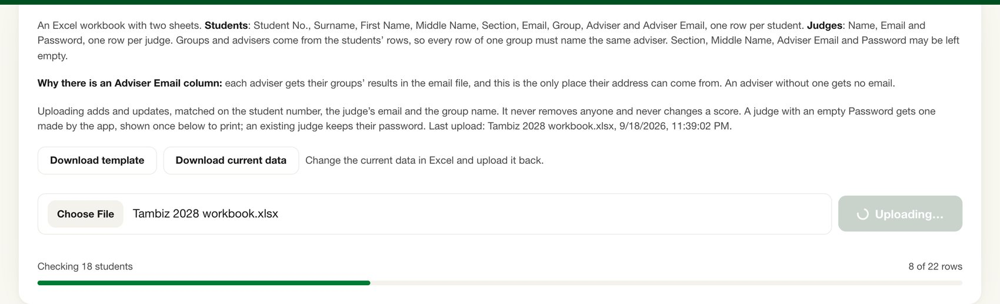
Checking 18 students · 8 of 22 rows: 18 students and 4 judges make 22 rows.
The green message says what changed. The shaded box lists anything in the file that was not taken, and why. This first try had one mistake left in it: a group whose rows named two different advisers.
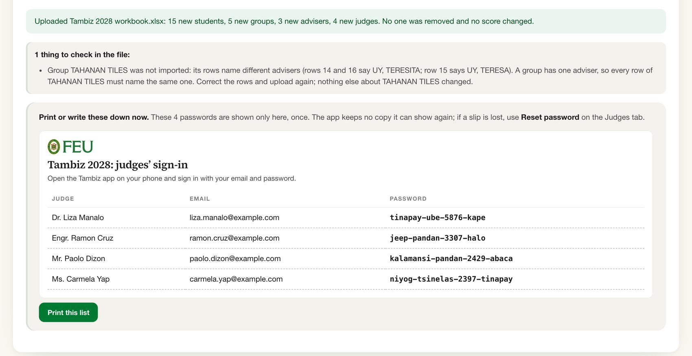
Uploaded Tambiz 2028 workbook.xlsx: 15 new students, 5 new groups, 3 new advisers, 4 new judges. No one was removed and no score changed. Below it: Group TAHANAN TILES was not imported: its rows name different advisers (rows 14 and 16 say UY, TERESITA; row 15 says UY, TERESA). Then the judges' sign-in list.
It lists each new judge's name, email and password, laid out to fit one page. Cut it into slips for the judges' briefing.
The passwords are shown only this once. The app keeps no copy it can show again. If you leave the page without printing, or a slip is lost, give that judge a new password with Reset password on the Judges tab (chapter 9.4).
Uploading twice never adds anyone twice: students are matched on Student No., judges on email, groups on name. Judges already in the app keep their passwords.
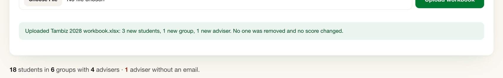
Uploaded Tambiz 2028 workbook.xlsx: 3 new students, 1 new group, 1 new adviser. No one was removed and no score changed. The line under it counts 18 students in 6 groups with 4 advisers · 1 adviser without an email.
This does not look like an Excel .xlsx file. Open it in Excel, Save As → Excel Workbook (.xlsx), and upload that. The Students sheet has no “Email” column. A heading was renamed: copy row 1 from a fresh template. Nothing is saved when a file is refused.
Every list in the app is the same table, and it works like Excel. There is no Save button: every change saves itself, and the label at the top right says All changes saved, Saving…, or in red how many cells were refused.
| To | Do this |
|---|---|
| Change a detail | Click the cell, type over it, press Enter. Esc throws away what you typed. |
| Paste from Excel | Copy the cells in Excel, click where the top-left one should go, Ctrl+V. A bar says how many cells will change; Enter applies, Esc cancels. |
| Move a student to another group | Type the group's name in their Group cell. The cell completes the name as you type; Enter or Tab accepts. |
| Change a group's adviser or adviser email | Type it on any one row of the group; every member's row follows. |
| Add a student | Type in the empty last row, Add a student here. |
| Remove a student | Select the row and press Remove student (or Ctrl+Delete, then Enter). A student the judges have already scored cannot be removed. |
| Find someone | Ctrl+F or the Search box; the lists beside it filter by Section, Group or Adviser. Click a heading to sort. |
It lists this event's judges. Most came in with the workbook. To add one more, type their name and email in the last row, Add a judge here; a sign-in list with their password appears above the table, once, to print.
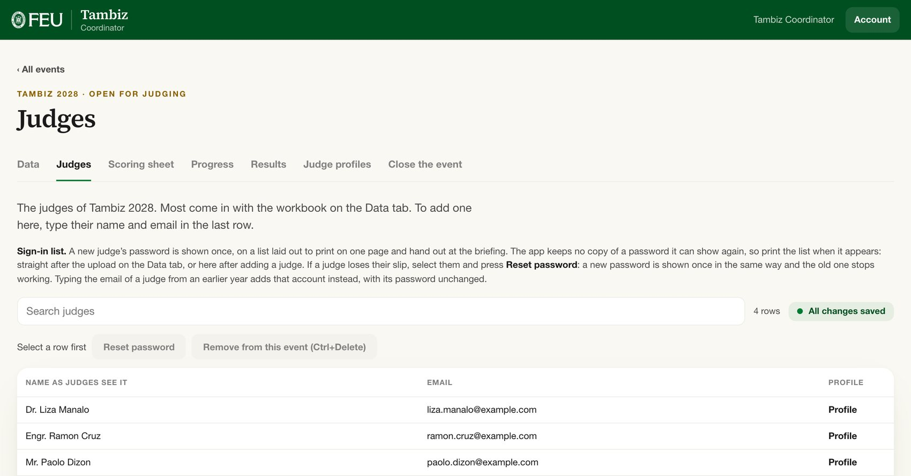
The four judges of Tambiz 2028. Profile opens that judge's page in Judge profiles. Reset password and Remove from this event work on the selected row (chapter 9.4).
Typing the email of a judge from an earlier year adds that same account, with its password unchanged, so their judge profile carries on.
There is no button to press. An event is open for judging from the moment it is created, and a judge can score as soon as they are on it. What opens judging in practice is the slips in the judges' hands.
A phone that has never opened the app cannot load it with no connection. After one visit, scores typed offline are kept on the phone and sent later (chapter 5).
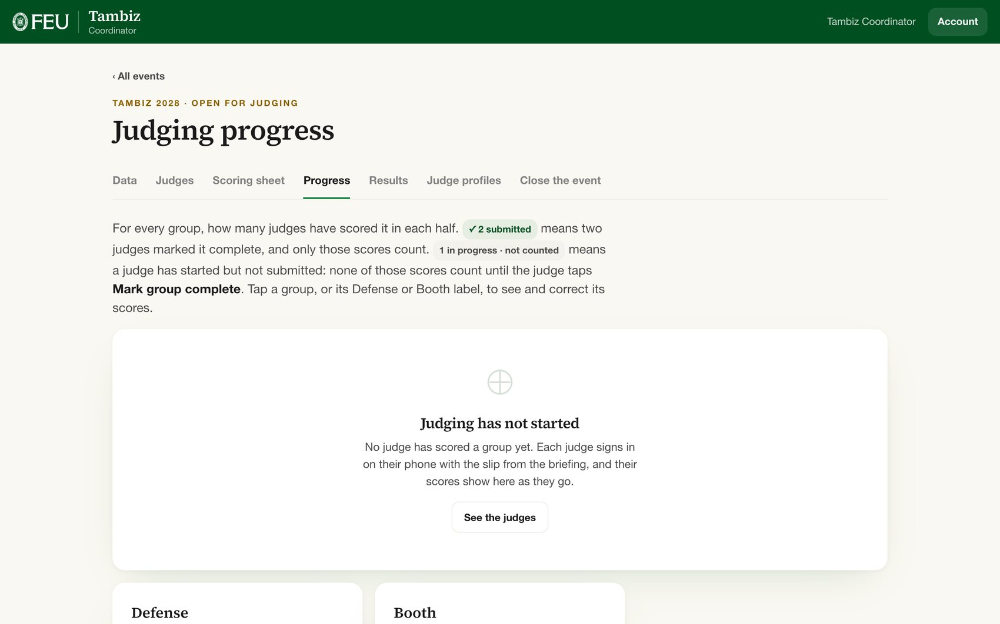
Before any score arrives. From the first submitted sheet on, this page fills in (chapter 6).
The Tambiz Manual | Chapter 4
One student, Andrea Reyes of KAPE KULTURA, followed from the judges' scores to her letter grade. Every number is from the Tambiz 2028 pictures in this manual.
Two defense judges submitted a sheet for KAPE KULTURA: Dr. Liza Manalo and Mr. Paolo Dizon. For each criterion the app takes the average of their two scores.
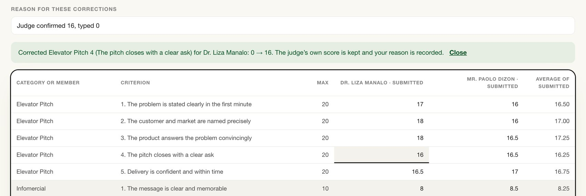
KAPE KULTURA's Defense scores (Progress → the group's name). Criterion 4 is shaded: Dr. Manalo typed 0 and the coordinator corrected it to 16 with a reason (chapter 6).
| Criterion | Max | Dr. Manalo | Mr. Dizon | Average |
|---|---|---|---|---|
| 1. The problem is stated clearly… | 20 | 17 | 16 | 16.50 |
| 2. The customer and market… | 20 | 18 | 16 | 17.00 |
| 3. The product answers the problem… | 20 | 18 | 16.5 | 17.25 |
| 4. The pitch closes with a clear ask | 20 | 16 (corrected) | 16.5 | 16.25 |
| 5. Delivery is confident… | 20 | 16.5 | 17 | 16.75 |
| Elevator Pitch | 100 | 83.75 → 83.75% |
Averages added up: 83.75 out of 100 points, so 83.75%. A category's percentage uses only criteria that have at least one score, so a blank criterion is left out rather than counted as zero.
Every category weighs the same within its half. Infomercial is out of 40 points, not 100, but its percentage counts the same as the others'.
The app carries the halves unrounded until the end; working with the two-decimal figures gives the same 84.01. Every student of KAPE KULTURA shares this number.
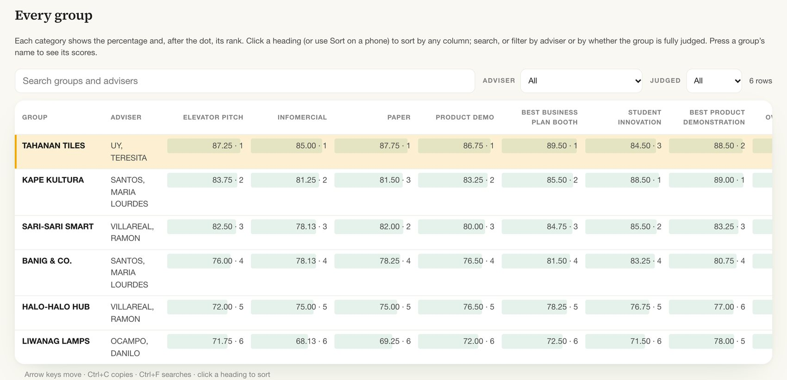
Results → Every group. Each category shows its percentage and, after the dot, its rank. The table scrolls sideways inside its frame: KAPE KULTURA's Overall 84.01 and Rank 2 are in the columns to the right of this picture, and in the workbook's Results sheet (chapter 7.4).
In the Defense, each judge also scores every student: Presentation /20, Communication /40, Q&A /40. For each of the three, the app averages the judges who scored it, then adds the three averages.
| Andrea Reyes | Max | Dr. Manalo | Mr. Dizon | Average |
|---|---|---|---|---|
| Presentation | 20 | 18 | 17 | 17.50 |
| Communication | 40 | 35 | 32.5 | 33.75 |
| Q&A | 40 | 34 | 32 | 33.00 |
| Member total | 100 | 84.25 |
Until every one of the three has at least one judge's score, there is no member total and no grade; a partial total is never scaled up.
| Rounded grade | 92–100 | 85–91 | 78–84 | 71–77 | 64–70 | 57–63 | 50–56 | 0–49 |
|---|---|---|---|---|---|---|---|---|
| Letter | A | B+ | B | C+ | C | D+ | D | F |
| Quality points | 4 | 3.5 | 3 | 2.5 | 2 | 1.5 | 1 | 0 |
The grade is always rounded up. Andrea's 84.13 becomes 85, a B+; rounded the ordinary way it would have been 84, a B. Any fraction at all goes up: 84.01 becomes 85 too.
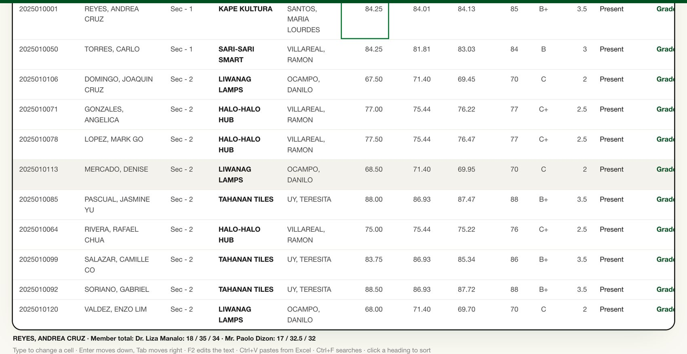
Results → Individual grades, with Andrea's Member total cell selected. The line under the table shows each judge's three scores: Dr. Liza Manalo: 18 / 35 / 34 · Mr. Paolo Dizon: 17 / 32.5 / 32.
| Rule | What it means |
|---|---|
| Only submitted sheets count | A sheet the judge never marked complete is ignored everywhere. Mr. Dizon started HALO-HALO HUB's defense and never submitted it, so HALO-HALO HUB's defense rests on Dr. Manalo's sheet alone. |
| A blank is never a zero | A criterion, category or half nobody scored is left out. A group with no booth score at all has its defense as its overall. |
| Incomplete groups are not ranked | Until every criterion in both halves has a score on a submitted sheet, a group reads Incomplete, with no rank and no place on the leaderboard. |
| Two decimals, one rounding | Every percentage shows two decimals; the screens and the workbook round the same way, so they always agree. |
| Ties go to the higher overall | In Infomercial, SARI-SARI SMART and BANIG & CO. both show 78.13%. SARI-SARI SMART's overall (81.81) is higher than BANIG & CO.'s (78.60), so it ranks 3rd and BANIG & CO. 4th. Two groups share a place only if their overalls are equal too. |
| Absent means zero | A student marked absent from the defense has zero for every individual score nobody gave, and a grade worked out as usual (below). |
| Scores above the maximum are refused | Never quietly changed to the maximum. The judge's phone refuses them, and so does the server. |
Kristine Aquino of BANIG & CO. missed the defense and was marked absent. Her member total is 0, so her final grade is (0 + 78.60) ÷ 2 = 39.30, rounded up to 40: F. That is the department's rule, applied exactly. If the department decides otherwise for a student, type their individual scores on the group's scores page with a reason (chapter 6); the grade, the workbook and the email follow.
With the member total in A1 and the group overall in B1:
=ROUNDUP((ROUND(A1,2)+ROUND(B1,2))/2,0)
Then read the letter from the band table above. For Andrea: A1 84.25, B1 84.01, C1 85, B+.
The Tambiz Manual | Chapter 5
Everything a judge sees, on a phone. Photocopy this chapter for the judges' briefing. The pictures follow Dr. Liza Manalo scoring KAPE KULTURA's defense.
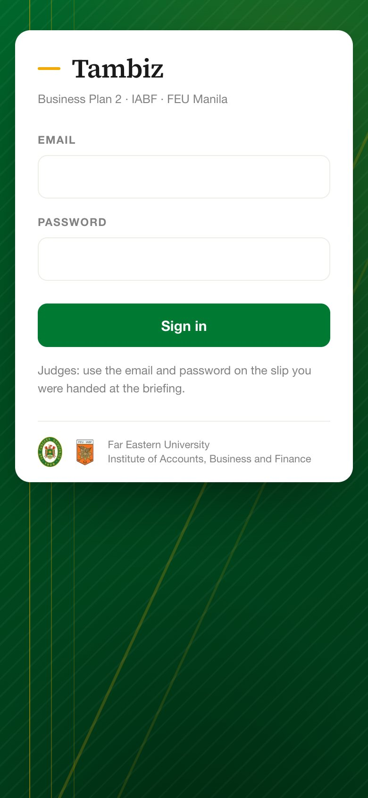
The sign-in card.
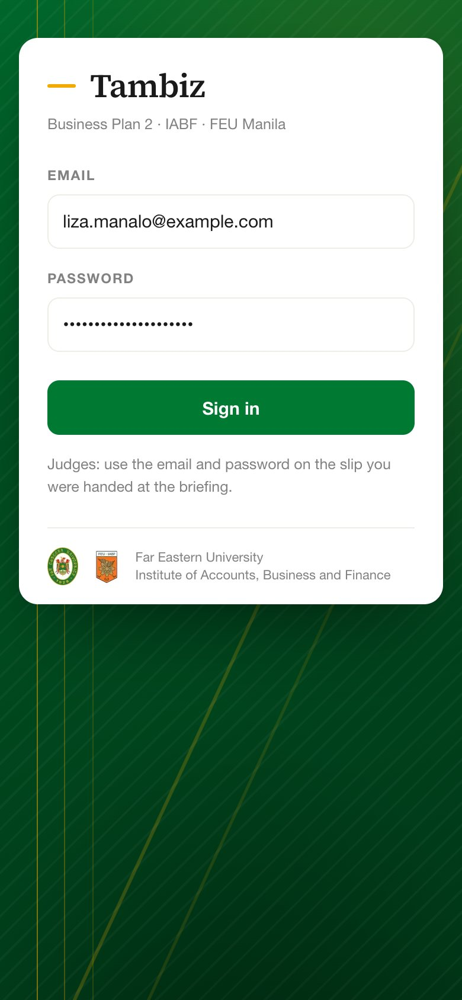
Email and password from the slip.
Sign-in failed. Check your email and password. Phones often add a capital letter or a space at the start: check both. After three wrong tries the phone says Too many attempts. Wait 8 seconds, then try again. Wait, then try once more carefully. Still stuck: ask the coordinator for a new password.
The list shows every group, with its adviser and whether you have started it. You can search by group or adviser.
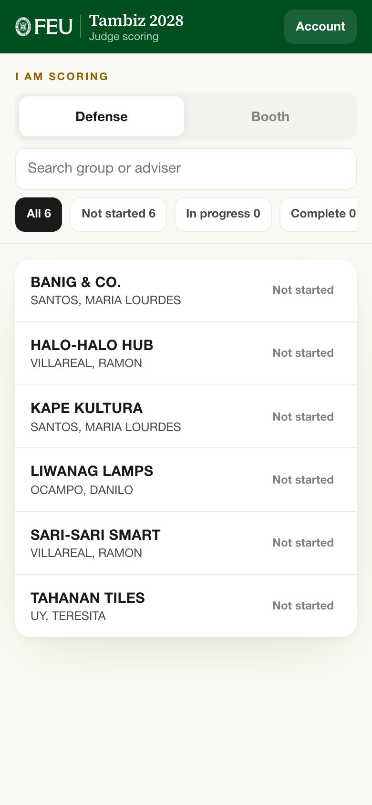
"I am scoring: Defense". Nothing started yet.
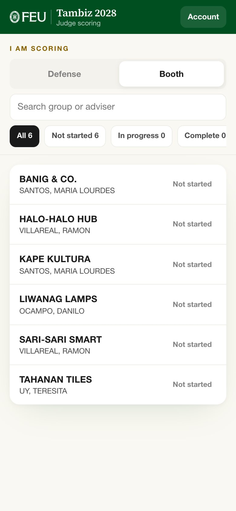
Tap Booth to switch.
You start on the first category. Each row has its number, the criterion, a large box, and the maximum beside it, for example /20. The label at the top right says whether your scores are saved.
KAPE KULTURA, DEFENSE, step 1 of 6: Elevator Pitch. The strip under the name shows every category with how many of its criteria you have scored; tap one to jump to it.
The six steps of a defense are the four categories, then Members, then Review. A booth has its three categories, then Review.
Scores can have up to two decimals, for example 16.5 or 8.75. There is no Save button: every score is kept on the phone the moment it is typed, and sent in the background.
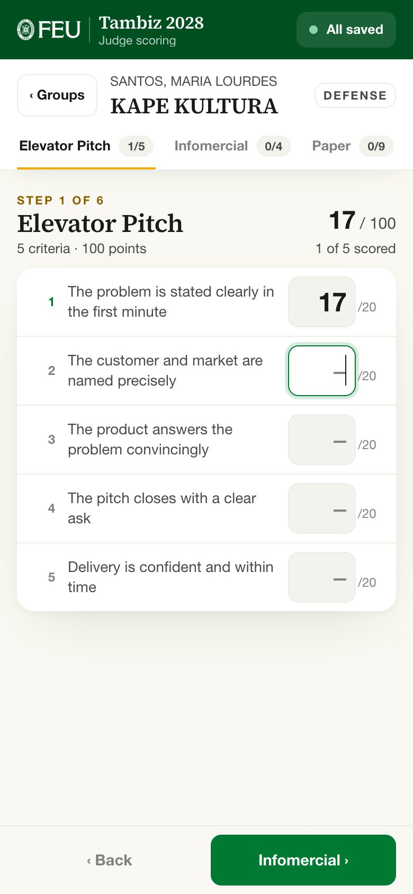
17 typed; the next box is ready.
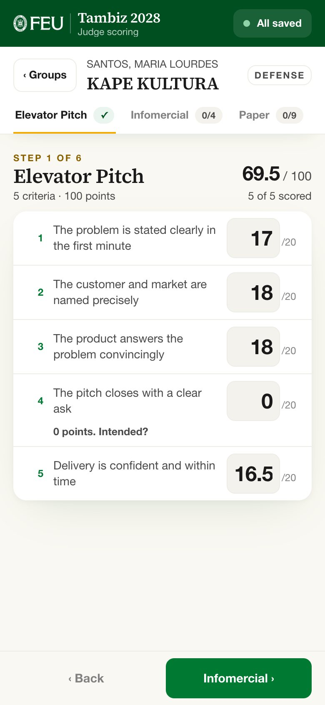
All five scored: 69.5 / 100. A 0 asks 0 points. Intended? It is allowed; it is only a reminder.
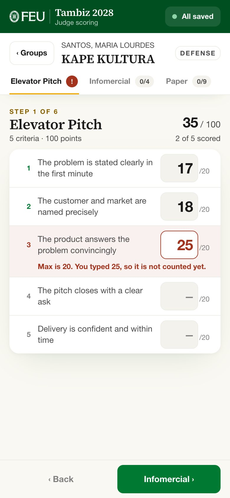
Max is 20. You typed 25, so it is not counted yet. A score above the maximum, or with a third decimal, is refused, never quietly changed. The category gets a red ! in the strip until it is fixed.
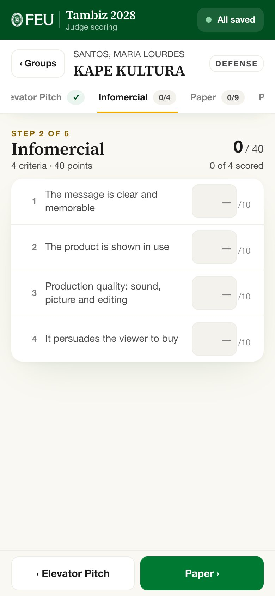
Step 2 of 6: Infomercial, out of 40. Elevator Pitch has its tick.
The label counts the scores kept on the phone, and they send by themselves when the connection is back. Do not close the browser, use a private tab, or clear the browser while scores are waiting.
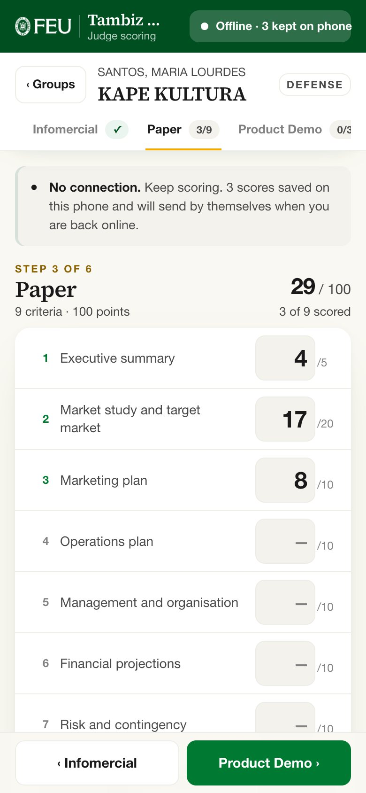
Offline · 3 kept on phone, and a note: No connection. Keep scoring.
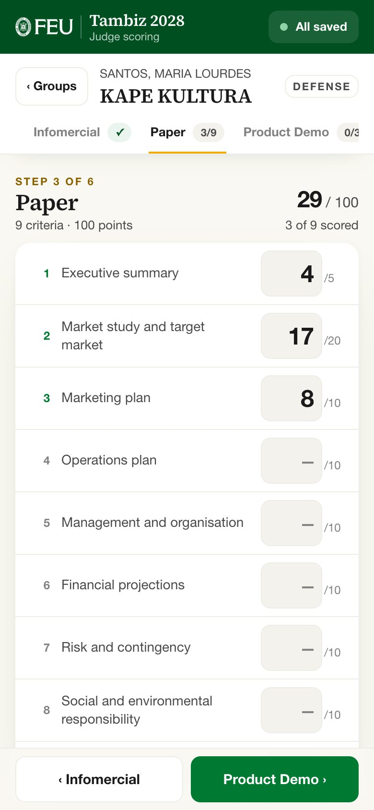
Connection back: All saved, with nothing to press.
The label says Sign in to send 3: the phone was signed out while scores were waiting. Tap Sign in again in the message at the top, sign in, and open the same group; the kept scores send.
One card per student, each with Presentation /20, Communication /40 and Q&A /40.
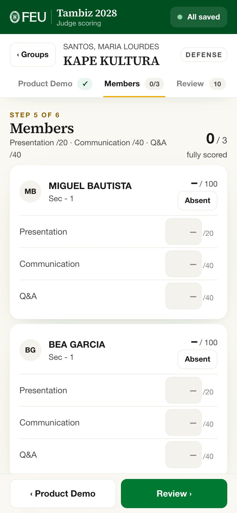
Step 5 of 6: Members.
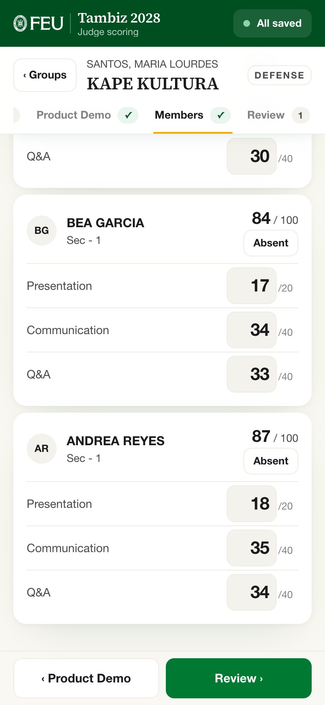
Each card shows its total out of 100.
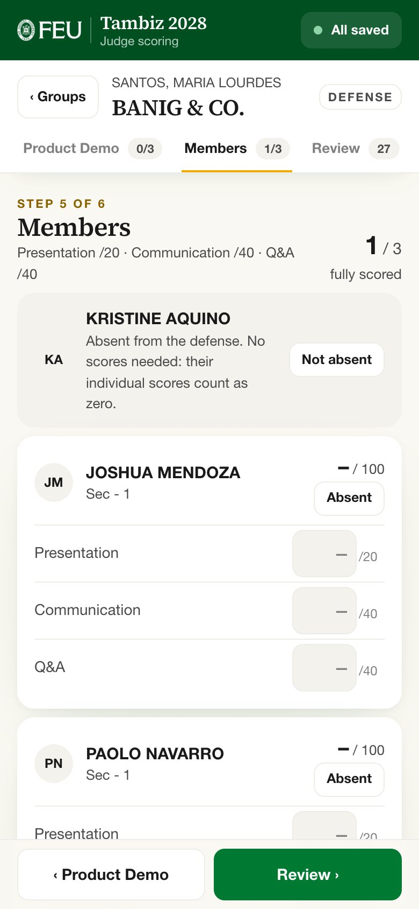
BANIG & CO.: Absent from the defense. No scores needed: their individual scores count as zero. Every judge and the coordinator see it. Not absent undoes it.
Absent means a zero for that student's own scores, and usually a failing grade (chapter 4). Mark it only when the student really was not there.
Review shows your percentage for each category, every blank box and every zero. Go jumps straight to that box.
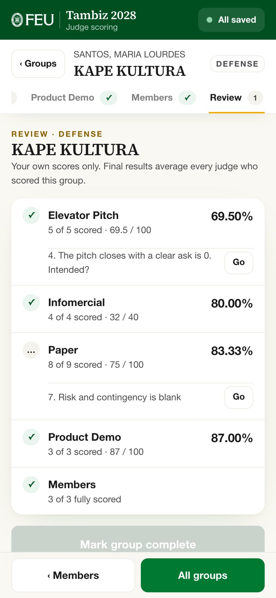
One blank left: 7. Risk and contingency is blank. Mark group complete is grey.
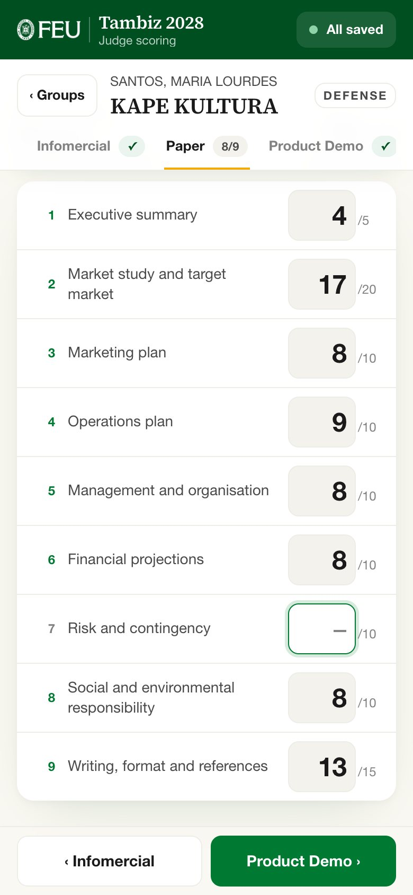
Go opened Paper with the blank box ready to type in.
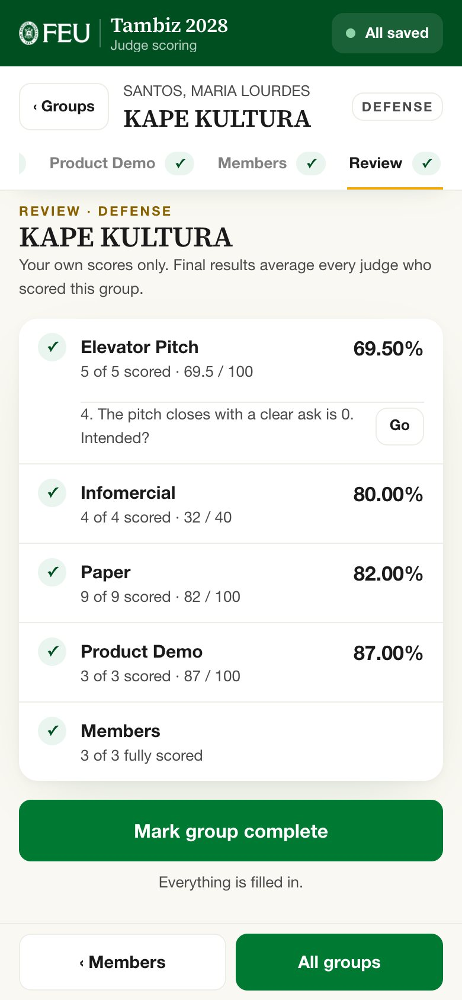
Everything is filled in. The button is green.
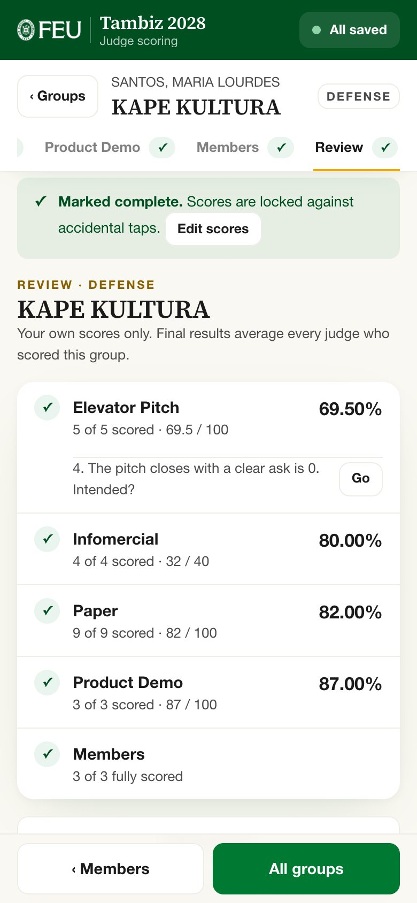
Marked complete. Scores are locked against accidental taps.
Your scores for a group count only after you tap Mark group complete. A group you scored but did not mark complete counts for nothing.
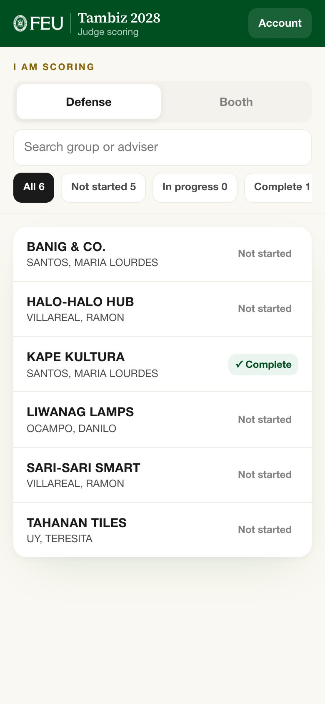
KAPE KULTURA now shows ✓ Complete. The filters at the top show what is left: Not started, In progress, Complete.
Open it and tap Edit scores. While you edit, your scores for that group stop counting; tap Mark group complete again when you are done. You can do this until the coordinator closes the event.
The list says Judging is closed. You can still look at your scores, but changes are no longer accepted.
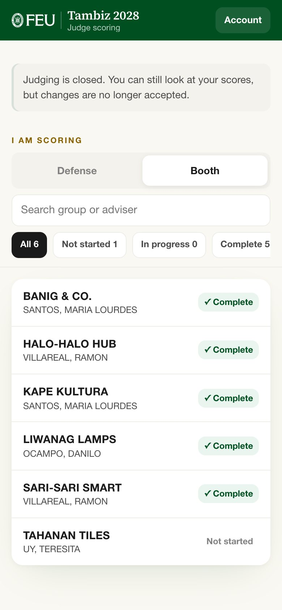
A booth judge's list after the event closed.
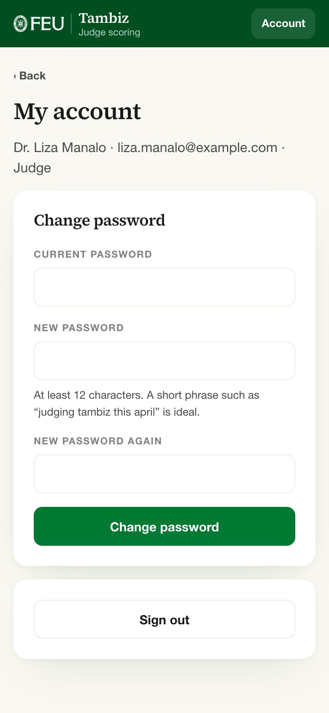
Account: a judge can change their own password here, at least 12 characters.
The Tambiz Manual | Chapter 6
While the judges score: watch progress, correct what a judge asks you to, settle what stops the event closing, and close it.
The two boxes count, for each half, the groups with at least one submitted sheet.
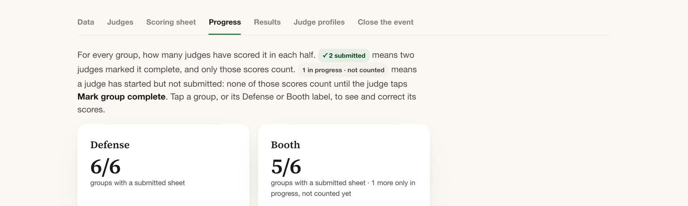
Defense 6/6. Booth 5/6, "1 more only in progress, not counted yet".
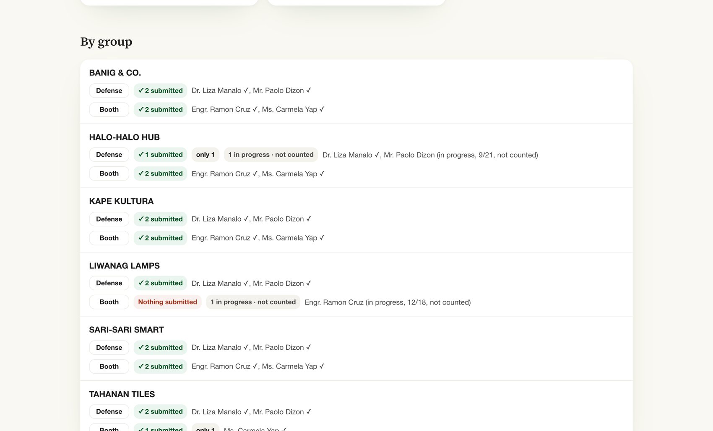
| Label | Meaning |
|---|---|
| ✓ 2 submitted | Two judges marked it complete. Only these count. |
| only 1 | One submitted sheet. It counts, but a second judge makes the result steadier. |
| 1 in progress · not counted | A judge started and has not tapped Mark group complete. Their name and how far they got are shown, for example "Mr. Paolo Dizon (in progress, 9/21, not counted)". |
| Nothing submitted (red) | Started, but no sheet submitted: the group has no score in this half yet. LIWANAG LAMPS' booth, above. |
| No scores (red) | No judge has touched it. |
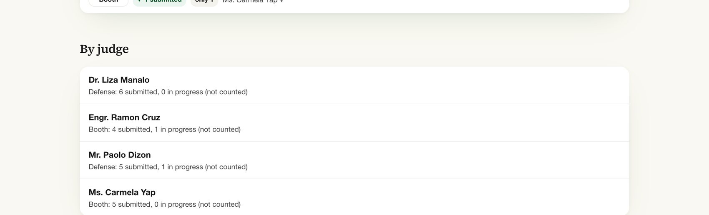
Engr. Ramon Cruz: Booth: 4 submitted, 1 in progress (not counted). Go and ask him to finish and tap Mark group complete.
A judge tells you they typed 0 for KAPE KULTURA's "clear ask" and meant 16. You correct it yourself; the judge's own score is kept beside yours.
One row per criterion (and, for the defense, per student's Presentation, Communication and Q&A), one column per judge, and the Average of submitted.
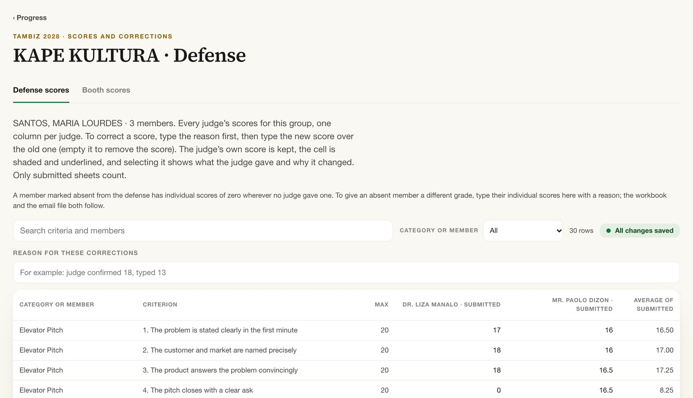
KAPE KULTURA · Defense. Each judge's heading says submitted or in progress, not counted.
Judge confirmed 16, typed 0
A reason is required; the table takes no change without one. The same reason is used for every correction until you change it.
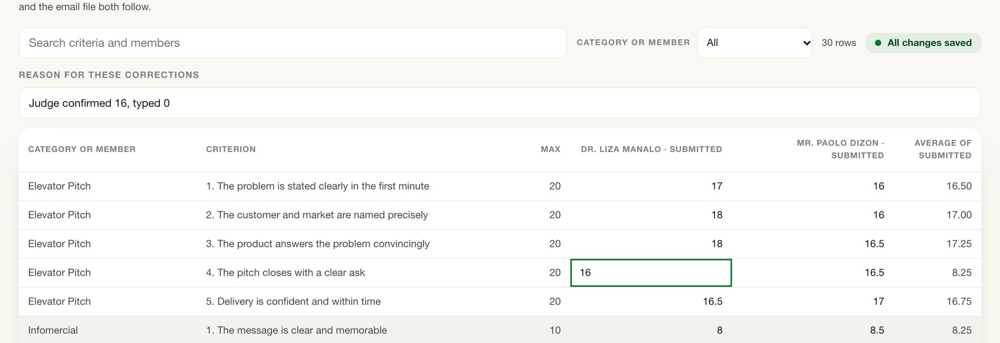
16 typed over Dr. Manalo's 0.
Corrected Elevator Pitch 4 (The pitch closes with a clear ask) for Dr. Liza Manalo: 0 → 16. The judge’s own score is kept and your reason is recorded. The cell is shaded and underlined; the average is now 16.25.
A score above that row's maximum is refused and the cell stays red. Empty a cell to remove a score altogether. Select a corrected cell and the line under the table says who corrected it, what the judge gave, and why.
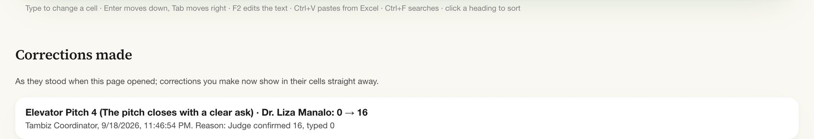
Every correction, with who, when and why. The workbook's Scores sheets list them too, in their last column.
You can correct scores while the event is open and after it is closed, until the email file is downloaded.
Items marked Needs you keep the Close the event button grey. Items marked Check are worth a look but do not stop it.
1 item needs you before the event can close. LIWANAG LAMPS: no completed Booth sheet. Under it, four Checks: a half with only one completed sheet, and sheets a judge has not submitted.
| Needs you | How to settle it |
|---|---|
| GROUP: no completed Booth sheet (or Defense), or a criterion nobody has scored | Ask the judge to finish and tap Mark group complete. If the group genuinely cannot be fully judged, for example it never set up its booth, use Close this group with the scores it has… (step 9). |
| STUDENT (GROUP) has incomplete individual scores | Ask a defense judge to score them, correct the scores yourself (6.2), or, if they missed the defense, press Mark absent from the defense. |
The reason is kept with the results. The missing half stays out of the group's score; it is not counted as zero, and the group is marked Finalised incomplete in the workbook. Here the judge finished instead, so nothing was accepted.
Kristine Aquino is marked absent, with Not absent to undo it. Under These people will get no email: students with no grade yet, and OCAMPO, DANILO, adviser of LIWANAG LAMPS, has no email.
Click the Adviser email cell on any row of one of their groups, type the address, press Enter. Every row of that adviser follows.
docampo@example.edu.ph typed once, on Joaquin Domingo's row; all three LIWANAG LAMPS rows now carry it.
"Closing locks every judge’s scores. A blank score is never counted as zero. You can still correct a score with a reason, and undo closing, until you download the email file."
The event is closed. Judges can no longer change scores. Download the two files below. The eyebrow now reads TAMBIZ 2028 · CLOSED.
Until the email file is downloaded, you can reopen judging: open Undo closing… at the bottom of the tab, tick Reopen judging, press Undo closing. Judges can change scores again, and a workbook you already downloaded may no longer match. Close the event again when judging is done.
Undo closing, opened. Chapter 8 continues with the two files.
The Tambiz Manual | Chapter 7
Results move as judges submit, until you close the event. Only you see these pages; students and advisers see only their own email.
One card per category, and Overall: what is read out at the awarding. Groups still sharing a place are listed alphabetically, and every group tied at 10th is listed, so in a rare year a card has eleven names or more.
Tambiz 2028 has only six groups, so every group appears on every card. Until any group has a complete category, the page shows No results yet here.
Each category's percentage with its rank after the dot (87.25 · 1), the Overall, its Rank, and whether the group is Complete. A faint bar behind each percentage shows its size; the leader has a gold edge. Click a heading to sort by it, for example Paper for the paper ranking. A category not fully scored shows incomplete and no rank; nothing scored shows a dash. Press a group's name to open its scores.
The first seven columns. Scroll the table sideways, or use Sort on a phone, for Overall, Rank and Judged.
Advisers ranked by the average overall of their ranked groups. Only you see it: an adviser's email lists their own groups' percentages, never a position.
Every student is one row, sorted by section and surname: member total, group overall, final grade, rounded up, letter, quality points, whether they were at the defense, and their status.
The formula and the FEU bands are printed above the table, so anyone reading over your shoulder can check a grade.
Type a name or student number in Search. The lists narrow by Section, Group, Adviser, Letter, At the defense and Status; No grade yet under Status shows who still needs scores. Select a Status cell to see why a student has no grade, or a Member total cell to see each judge's three scores (chapter 4).
Absent
Present undoes it. Absent means their unscored individual scores count as zero (chapter 4).
A basis for knowing your panel, not for removing anyone. It describes how each judge scored; it does not say what to do about it. Every comparison uses only co-judges who scored the same group in the same half, and only criteria both scored.
| Column | What it says |
|---|---|
| Groups | How many groups they scored, in each half. |
| Marks at | How far above or below the other judges of the same groups they score, on average. −3.94 pts is about four points lower. |
| Separates groups | Whether they use the range or give nearly everyone the same: narrow, normal or wide, with their lowest and highest score. |
| Agrees with co-judges | Whether they put the groups in much the same order as the others (high), partly (medium) or differently (low), even when the numbers differ. |
Ms. Carmela Yap, Booth: her score, the others' average, the gap, where the group comes in her order and in the panel's, and anything to look at: the same mark entered down a whole category, criteria left blank, or a score 6 points or more from every co-judge. TAHANAN TILES had no co-judge, so it is listed but not compared. Across events builds one line per year the judge scores in.
Marking hard is not a fault. Every group's score is averaged across its judges, so a strict judge is absorbed completely. Three judges on one evening is a small sample, and the panel's consensus is not the truth. A judge who disagrees may be the one paying attention.
The first of the two files. Download it on the Close the event tab (Download the workbook). Before closing it is a preview of the scores as they stand; after closing it is the record. It is made fresh each time, and its name carries the date and time, for example Tambiz_2028_202609182349.xlsx.
| Sheet | What is on it |
|---|---|
| Scores | Every defense judge's scores, one row per judge per group, with corrections in the last column. |
| Booth Scores | The same for the booth. |
| Results | Every category percentage and rank, both halves, the overall and its rank, and Judged: Complete, Incomplete, or Finalised incomplete. |
| Leaderboard | Positions 1 to 10 per category and overall, with a Tied row for each further group sharing 10th. |
| Individual Grades | Every student's three scores from each judge, their total, the group overall, final grade and letter. |
| For Encoding | The official grade sheet, sorted by section: the one you copy into the encoding system. |
Results, sorted by overall rank.
For Encoding: the FEU header lines, then Member Name, STUDENT NAME (per Class Roll), Student ID, Section, Total Score, Group Overall %, Final Grade (rounded up) and Letter Grade. The Note column marks absent students and says why a grade is blank. Students with no section are listed first, together, with a line at the end saying how many.
Scores, the first columns: one row per judge per group, with each judge named. The last column, not shown, reads for KAPE KULTURA: Elevator Pitch #4: judge gave 0, now 16 (Judge confirmed 16, typed 0).
Excel opens it read-only with a yellow Protected View bar: press Enable Editing. It will not open at all: the download did not finish; download it again. Nothing is lost.
The Tambiz Manual | Chapter 8
The app sends no email itself. It gives you a file with every email already written, and Microsoft Power Automate sends them from your FEU mailbox.
| File | For | When |
|---|---|---|
| 1. The workbook | The department's record, and the For Encoding grade sheet (chapter 7.4). | Any time; after closing it no longer changes. |
| 2. The email file | One row per student and adviser: Email, Name and the whole Message. | Only after closing. Downloading it is final. |
Open For Encoding and read down the Letter Grade column. Look for blanks and for anything surprising. Correct scores now if needed (chapter 6.2): after the next step you cannot.
"Downloading the email file is final. After it, closing cannot be undone and no score, absence, student or group can change, because the emails would no longer match."
The eyebrow reads CLOSED, EMAIL FILE DOWNLOADED, and the page says when: "The email file was first downloaded on September 18, 2026 at 11:49 PM, so nothing can change now." Download the email file again gives the same file.
From this moment nothing about the event can change: no score, no absence, no student, no group. If a mistake is found later, correct the grade in the official encoding system and tell the student and adviser directly (chapter 9.7).
An Excel table named Emails, with three columns: Email, Name, Message. Students come first, one row each; then advisers, one row each however many groups they have. A second sheet, Read me, repeats the sending steps below.
The first rows. Each Message is the whole email, written in HTML.
Their letter grade and their group's percentage. Never a rank or a placing.
Andrea Reyes's Message, as it reads in her inbox. The Subject is whatever you type in Power Automate.
Each of their groups with its percentage, and, for each group that placed in the top 10, the categories, never the place. It says plainly that a place in the top 10 is not the same as winning an award.
Prof. Santos's Message. With only six groups this year, both her groups are top 10 in every category; in a real year the list is shorter.
The wording of every email lives in one file of the app, src/lib/messages.ts. Changing it is a programmer's job (chapter 9.3).
These steps are the email file's own Read me sheet. The writer of this manual had no FEU Microsoft 365 account, so the Power Automate screens are not pictured. The first time you do it, check the names on screen against each step, and correct this page in pen if they differ.
Choose the file, and choose the table:
Emails
Without it, only the first 256 rows are read, and the advisers at the bottom of the file, and some students, get nothing. Count the emails sent against the number of rows.
| Field of Send an email (V2) | Set it to |
|---|---|
| To | the Email column |
| Subject | your own words, for example Your Tambiz 2028 result |
| Body | the Message column. The Body sends HTML as it is, so the message arrives formatted. |
Make a copy of the file with only one row, put your own address in its Email cell, run the flow on the copy, and read the email that arrives. Only then run it on the real file.
Keep the email file private. It holds every student's grade. Do not leave it in a shared folder, and delete your OneDrive copy once the emails are sent. The workbook is the record you keep (chapter 9.8).
The Tambiz Manual | Chapter 9
How to keep Tambiz alive from one year to the next, and how to take it over. Written for a careful person who is not a programmer; where a step needs one, it says so.
The Vercel and Neon dashboards need their owner's sign-in, which the writer of this manual did not have. Steps in those dashboards follow Vercel's and Neon's own help pages. The first time you do one, check the names on screen and correct this page in pen if they differ. Every step inside the Tambiz app was checked against the app.
Phones and laptops talk only to the site; the site talks to the database. Nobody opens the database directly.
| Piece | What it is | Where | Cost |
|---|---|---|---|
| Code | The public repository benjiesotelo-sudo/Tambiz-Calculator on GitHub. It also keeps the original single-file calculator, index.html. It holds no student data. | github.com | GitHub Free: nothing |
| Site | The Vercel project tambiz-calculator. | Vercel, Singapore (the live site answers from sin1, checked 19 September 2026) | Vercel Hobby: nothing |
| Database | The Neon project Tambiz Calculator, a Postgres database. | AWS Asia Pacific (Singapore) | Neon Free: nothing |
There is no bought web address, no email service and no other paid tool. The emails go out from your own FEU mailbox (chapter 8).
| Name | What it means |
|---|---|
| DATABASE_URL | The database's address with its password built in. Never delete it: without it the site starts on an empty temporary database, wiped whenever Vercel restarts it. |
| SEED_ADMIN_PASSWORD | The coordinator's (admin@tambiz.demo) password. While it is set, it is put back on that account every time the site starts (9.4). |
| SEED_JUDGE_PASSWORD | The same for the three sample judges, judge1@ to judge3@tambiz.demo. Real judges are never touched by it. |
| TAMBIZ_PREVIEW_DATABASE | Normally absent. Leave it that way: it keeps test copies of a change away from the real data (9.3). |
| Account | What it is for | If access is lost |
|---|---|---|
| GitHub | Keeps the code. Anyone who can write to it can change the app; a change on its main branch goes live by itself. | The site keeps running exactly as it is. No change can be made, including an urgent fix. Recover it through GitHub's account recovery. |
| Vercel | Builds and runs the site. Holds the settings, the build logs and the Redeploy button. | The site keeps running its last version. No redeploy, no setting changes, and route A back into the coordinator account (9.4) is closed. |
| Neon | Runs the database. Shows the connection string; can restore the last 6 hours. | The app keeps working. Route B back in (9.4) is closed. If the database itself is ever lost, the yearly workbooks are the record (9.8). |
Losing all three at once loses nothing that matters, if the workbooks were kept. That is why 9.8 matters more than any password.
Fill this in by hand and keep it with the printed manual in a locked drawer, or in the department's password manager. Do not photograph it into a shared folder.
| Account | Signs in with | Password kept in | Recovery codes kept in |
|---|---|---|---|
| GitHub | |||
| Vercel | |||
| Neon | |||
| Tambiz app | admin@tambiz.demo | none |
| Also note | Written in by, and date |
|---|---|
| This page last checked | |
| Where the yearly workbooks are kept (9.8) |
The database connection string (it starts postgresql://) and the two SEED passwords. Anyone holding the connection string can read and change every grade without signing in. They belong only in Vercel's settings and a password manager.
Turn on two-step sign-in for all three accounts and keep the recovery codes each gives you. A lost phone without recovery codes is the commonest way an account is lost for good.
Nobody edits the live site by hand. A change is proposed, checked, merged, and the site rebuilds itself.
Pull request 7 was merged at 14:34:03 on 18 September 2026 (UTC); Vercel reported the live deployment ready at 14:34:38, 35 seconds later. Allow a minute or two.
github.com/benjiesotelo-sudo/Tambiz-Calculator/commits/main
Newest at the top. A green tick with 1 / 1 means Vercel built that version. "Merge pull request #7" is what is live.
Vercel's comment: the test copy was Ready, with a Preview link. At the bottom: merged into main, 2 checks passed. The test copy never touches real data.
The repository's first change, which held only the old calculator and nothing Vercel could build: ✗ 0 / 1.
A failed build does not break the live site: Vercel keeps serving the last version that built. The change simply is not live. Tell whoever made it; the ✗ links to Vercel's log, which needs the Vercel sign-in.
After changing a setting (9.4) the site must be rebuilt, because Vercel applies new values only to new deployments.
In Vercel: open the project, then Deployments. Open the newest deployment marked Production and use its Redeploy button. Wait until it shows Ready, about a minute.
Give this list to any programmer you ask for help. It comes from the repository's own notes (CLAUDE.md, README.md).
The app is built on Next.js, whose makers publish security fixes, and Vercel retires old build tools. A site not rebuilt for a year may fail to build just when a change is needed. So once a year, a month before the event, a programmer updates it, the checks pass, and it is merged while there is time to fix anything (9.6). It needs Node.js 22 or newer to build.
This manual lives in the same repository, in docs/manual/, with a README saying how to print it again after a change.
| Task | Who | Where |
|---|---|---|
| Add this year's judges | Coordinator | The workbook, or the Judges tab |
| Give a judge a new password | Coordinator | Judges tab (below) |
| Take a judge off this year's event | Coordinator | Judges tab (below) |
| Change your own password | Anyone | Account |
| Coordinator password lost | Vercel or Neon holder | Outside the app (routes A and B) |
"Reset the password of Engr. Ramon Cruz? Their old password stops working and they are signed out everywhere. Press Enter to confirm or Esc to cancel."
A one-line sign-in list, shown once. Then press I have printed or written them down. Closed it too soon? Reset again: each reset makes a new password.
Sheets they already submitted still count; they can no longer score. The app cannot delete or switch off an account: a removed judge can still sign in and sees the newest event they are still on. To lock someone out completely, reset their password and do not tell them the new one.
If SEED_ADMIN_PASSWORD is set in Vercel, a password you change under Account does not last: the site puts the variable's password back each time it starts, which Vercel does often. Choose one, and write down which: keep the coordinator password in the variable and change it the Vercel way (route A), or ask the Vercel holder to delete the variable and redeploy, after which Account changes last.
There is no "forgot password" link, because the app sends no email. Both routes need one of the accounts in 9.2.
In Vercel: the project tambiz-calculator → Settings → Environment Variables. Edit SEED_ADMIN_PASSWORD (or add it) for Production, at least 12 characters, Save, then redeploy (9.3).
On its first visit the rebuilt site stores the new password on admin@tambiz.demo, clears any wrong-password wait, and signs that account out everywhere.
Still refused? The redeploy has not finished, or the variable was saved for Preview only. Check it is set for Production and redeploy again.
Works for any account. The Neon holder copies the connection string (Neon project → Connect) and gives it to the programmer through a password manager, never by email or chat. In the repository folder, after npm install:
DATABASE_URL="paste the connection string here" npm run reset-password -- admin@tambiz.demo "a new long password"
It answers: Password reset for admin@tambiz.demo. Every session for that account was signed out.
Use at least 12 characters. The new password is too short. No account with the login … The email is spelled differently from the account; nothing changed. If SEED_ADMIN_PASSWORD is still set, the next restart puts that password back.
After three wrong passwords in a row an account waits 10 seconds, then 20, then 40, doubling up to 5 minutes, and says Too many attempts. Wait … seconds, then try again. The right password after the wait works normally. Reset password and both routes clear the wait at once.
One wrong password.
After four.
Every year is a new event. Almost nothing is copied into it, on purpose.
| Carries over by itself | Do again each year | Never carried over |
|---|---|---|
| The coordinator account Every judge account and password Each judge's record in Judge profiles The scoring sheet: points, weights, bands and wording, copied from the newest event Every past event, readable |
Create the event Check the wording, and change what changed Build and upload this year's workbook Add this year's judges and print slips Rehearse on the practice event |
Students, groups and advisers Scores, corrections and absences Results and grades |
Every past event stays in the list, newest first, with its state: Closed, email file downloaded.
A new event copies from the newest event, meaning the latest year. If it shows no wording, the event it copied from had none; paste it again (chapter 3). A new event spells the second defense category Infomercial, even if an older one had "Informercial".
Points, the 70/30 weights and the letter bands cannot be changed on screen. Changing them is a programmer's job, done before next year's event is created and checked with the tests. Ask a month ahead, never on the day. Leave last year's event as it is: never delete it, and never put this year's students into it.
Most problems of a once-a-year app come from the eleven months nobody touched it. Tick each box in order.
A judge always sees the newest event they are on. Rehearse with a separate rehearsal account added only to the practice event, never with a real judge who is already on this year's event, or their rehearsal scores land on the real one. The app cannot delete a sheet of scores, so never rehearse on the real event.
Rehearsal judge rehearsal@tambiz.demo
Print the password it shows. Next year, add the same email again and press Reset password.
You pass if the label counts the kept scores while offline (chapter 5, step 7), returns to All saved by itself, and the scores appear on the laptop's Progress tab. If it never returns to All saved, note the phone and browser and tell the programmer before the night.
Find the symptom, then do the fix.
| Why | Vercel or Neon is down; a free-plan limit was reached; or DATABASE_URL was removed. |
| Fix | Check vercel-status.com and neonstatus.com, and try every ten minutes. Ask the Vercel holder to look for a limit message and check DATABASE_URL. If judging cannot wait, score on the original calculator (below) and enter the scores later. |
| Why | The database was asleep (9.1). |
| Fix | Nothing is wrong. Open the site yourself ten minutes before judging, and before a break ends. |
| Why | A typo, an extra capital or space from the phone's keyboard, or several wrong tries. |
| Fix | Check their email on the Judges tab. Still failing: Reset password (9.4), which also ends the wait. If they see No event yet, they are not on this event: add them on the Judges tab. |
| Why | Almost always: they never tapped Mark group complete. Otherwise the scores are still on their phone: Offline · 3 kept on phone or Sign in to send 3. |
| Fix | Ask them to open the group on the same phone and browser, get online or sign in again, then Review and Mark group complete. Progress shows the result. |
| Why | The group's rows name different advisers or adviser emails; a row misses a required cell or has an address with no @. |
| Fix | The shaded box names the rows. Fix them in Excel and upload the same file again; nothing is added twice (chapter 2.3). |
| Why | They upload silently (chapter 2.3). |
| Fix | Before the email file is downloaded: type the right one in the Data table. Emptying a cell in the workbook and uploading does not clear it. |
| Why | Usually a rule doing its job: an unsubmitted sheet does not count; the grade is rounded up; an absent student has zeros. |
| Fix | On Individual grades, select their Member total cell for each judge's scores, and check by hand with chapter 4. Look for a correction on the group's scores page. Before the email file: correct with a reason (chapter 6). |
| Why | Nothing can change in the app after that moment, by design. |
| Fix | Correct the grade in the official encoding system, tell the student and adviser directly, and keep a note with the workbook of what changed and why. |
| Why | Pagination was off in Power Automate (only 256 rows read); the adviser had no email; the student had no grade. |
| Fix | Chapter 8, step 6. The Close the event tab listed everyone who would get no email. |
| Why | A forgotten password, or one changed under Account and put back by SEED_ADMIN_PASSWORD. |
| Fix | Try the password kept in the variable first. Otherwise route A or B (9.4). |
| Why | The build is still running, or it failed and the site kept the previous version. |
| Fix | Wait two minutes and reload. Look for the red ✗ on GitHub (9.3) and send the programmer its link. |
github.com/benjiesotelo-sudo/Tambiz-Calculator/blob/main/index.html
The file page. Double-click the downloaded index.html to open it in a browser; it needs no account.
The old calculator uses old rules: a score above the maximum is quietly changed to the maximum, and a blank can count as zero. Check every row by eye, and save its Excel file before closing the tab. The app cannot import it.
The database is where the app works. The workbook is what the department keeps.
| The database | The yearly workbook |
|---|---|
| Neon's free plan can restore only the last 6 hours. | A file that never changes once saved. |
| Free plans have been withdrawn before by other companies. | Opens in Excel, with no account, for as long as Excel exists. |
| Results are worked out afresh each time a page opens. | A snapshot of every score, correction, percentage, rank and grade. |
| Reachable only through the app. | Readable by anyone the department trusts with grades. |
Tambiz records / Tambiz 2028
Keep the email file out of it, private, and delete it once the emails are sent.
Never put a workbook in the GitHub repository. It is public, and the workbook holds real names, student numbers and grades.
| The question | Sheet |
|---|---|
| What grade did a student get? | For Encoding |
| How was that grade made? | Individual Grades |
| How did a group do in each category? | Results |
| Who placed in each category? | Leaderboard |
| What did each judge give; was anything corrected? | Scores, Booth Scores |
In this order, in person if you can, ticking each together.
| Who to ask about | Name | How to reach them |
|---|---|---|
| The course and its decisions | ||
| The code, and a programmer's help | ||
| The previous holder of the accounts | ||
| Vercel | Vercel's help pages | vercel.com/help |
| Neon | Neon's help pages | neon.com/docs |
The Tambiz Manual | Chapter 10
An honest list, so nobody is surprised on the night. The app was cut back on purpose in September 2026; some of these are choices, not oversights.
| Not there | What to do instead |
|---|---|
| Changing points, weights or letter bands on screen | Only the criterion wording can be changed. Each event keeps the sheet it was created with. A programmer changes the default before next year's event is created (9.5). |
| Renaming a group that already has scores | A group is its name: a new name makes a new group, and the scores stay with the old one. Get group names right before judging starts. |
| Deleting a sheet of scores | There is no button to delete a judge's whole sheet, for example after a rehearsal; only one score at a time, by emptying its cell with a reason. Rehearse on the practice event (9.6). |
| Deleting or disabling an account | Remove the judge from the event and reset their password (9.4). |
| A "forgot password" link | The app sends no email. Judges: Reset password. Coordinator: routes A and B (9.4). |
| Forcing a new judge to change their password | Judges can change it under Account; they are not made to. |
| Full offline mode | Scores typed offline are kept and sent later, but a phone that has never opened the app cannot load it offline, and reloading with no connection shows the browser's offline page. Every judge signs in once beforehand (chapter 3). |
| Sending the emails | The app writes them; Power Automate sends them (chapter 8). The Power Automate screens are not pictured in this manual. |
| Checking that an email address is the right one | Only its shape is checked. A second person reads the Email column (chapter 2). |
| Frozen results and file history | Closing locks the scores, but results are worked out afresh each time; the saved workbook is the snapshot (9.8). |
| A screen for the change history | Score corrections are listed on each group's scores page and in the workbook. Other changes (uploads, moves, closing) are recorded in the database with no screen to read them. |
| Corrections after the email file | Nothing can change once it is downloaded, and there is no "send corrected results" step (9.7). |
| Sign-ins for students or advisers | Deliberately none. Each gets one email. |
The Tambiz Manual | At a glance
One page to keep beside you. The chapter for each line is in brackets.
| A month before | |
| Update, redeploy, rehearse | Checklist and ten-minute rehearsal on the practice event (9.6) |
| Setting up | |
| Build the workbook | From the template: Students and Judges sheets, the five check formulas, a second reader for emails (2) |
| Create the event | Events → Year → Create event (3.2) |
| Criterion wording | Scoring sheet → paste 39 lines → Save wording (3.3) |
| Upload | Data → Choose File → Upload workbook → read the shaded box (3.4) |
| Judges' slips | Print this list, straight after the upload. Shown once (3.4) |
| Before the night | Every judge signs in once on their phone (3.7) |
| On the night | |
| Judges | Defense or Booth → group → score → Review → Mark group complete (5) |
| Watch | Progress: chase in progress · not counted and red labels (6.1) |
| Correct a score | Group's name → reason → type over the score → Enter (6.2) |
| Lost slip | Judges → select → Reset password → Enter → print (9.4) |
| Closing | |
| Settle | Close the event → everything under Needs you (6.3) |
| Close | Tick I have checked the progress → Close the event (6.4) |
| File 1 | Download the workbook, check For Encoding, save it to the records folder (7.4, 9.8) |
| File 2, final | Tick Results are final → Download the email file. Nothing can change after (8.1) |
| Send | Power Automate: table Emails, Pagination 1000, test on yourself first (8.3) |
| The rules that decide grades | |
| Grade | (Member total + group overall) ÷ 2, rounded up, then 92 A · 85 B+ · 78 B · 71 C+ · 64 C · 57 D+ · 50 D · below F (4) |
| Always | Only submitted sheets count · a blank is never a zero · absent means zero · ties by overall · two decimals (1, 4) |